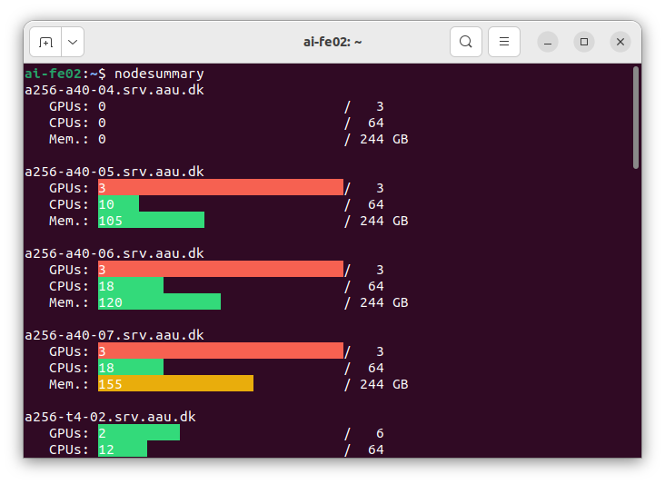

Running jobs
This section describes details of how to use the resource manager / queue system Slurm. We recommend reading Overview first and then Introduction before delving into the details.
- Official documentation for Slurm - AI Cloud is currently using version 21.08.8-2.
- Interactive tutorial for Slurm - this is a tutorial made by DeiC to help introduce HPC users to Slurm. Please note that this tutorial environment is not identical to our AI Cloud, but it enables you to familiarise yourself with Slurm in a safe environment where you cannot accicentally break anything for anyone else.
Bits and pieces in the queue system
The Slurm queue system is built around some concepts which are important to know in order to understand the system and how to use it:
- Node
- We often refer to these as compute nodes in this documentations,
because this is where the computational jobs take place.
The nodes are the individual servers in the platform; see Overview for illustration and the table in Introduction for details. - Partition
- You can think of partitions as different queues for the compute
nodes. There are several partitions in the AI Cloud and the same
nodes can be present in more than one partition.
For any one node, the different partitions it is present in can for example give access to the node under different conditions. The AI Cloud currently has the partitions: batch and prioritized. A few additional partitions are only visible to specific users of these (create, aicentre1, aicentre2).
See more details about partitions in a later section.
- Resources
- Slurm manages access to resources in the nodes. The important
resources to know about in AI Cloud are CPUs, memory, and GPUs. Each
job you submit will require certain resources. These are either
implied by default values or explicitly requested by you when
submitting a job.
A job can only start when Slurm can find enough of the required resources available on one or more nodes. If resources are not currently available, your jobs wait in queue until other jobs have completed and relinquished the resources. - Time limit
- Partitions may impose time limits. These limits define the longest time your job can run for in the specific partition. They can be viewed with the
sinfocommand. If your job has not ended by this time limit, it will be automatically cancelled. - In the days leading up to the service windows, you will also be met by a time limit, which prevents you from launching jobs with end dates that surpass the date of the servicewindow.
If the
timeparameter is not set, Slurm assumes you ask for the default maximum time for the partition. You will thus have to calculate how much time you have before the service window, and then submit a job with this parameter added. To submit a job that runs for 1 day and 8 hours, you can simply addtime=1-8:00:00to your slurm command. Additionally you can read about our recommendations for using checkpointing to work with time limits.
Checking the current state of the queue system
It is often desirable to be able to see what is going on in the queue system, for example to get an idea if there are many other jobs in queue when you wish to run a job.
Checking the overall state of the platform
Use the command sinfo to see the state of the nodes in the AI
Cloud. Run sinfo --help or man sinfo in AI Cloud for detailed
documentation of the command.
Example
sinfo
PARTITION AVAIL TIMELIMIT NODES STATE NODELIST
batch* up 12:00:00 1 mix nv-ai-04
batch* up 12:00:00 8 idle a256-t4-[01-02],i256-a10-06,i256-a40-[01-02]...
prioritized up 6-00:00:00 8 idle a256-t4-[01-02],i256-a10-06,i256-a40-[01-02]...
The sinfo command shows basic information about partitions in the
queue system and what the states of nodes in these partitions are.
PARTITION shows which partition a line in the table relates to. Multiple lines can show the same partition, because different nodes within a partition may be in different states.
AVAIL shows the availability of the partition where "up" is normal, working state where you can submit jobs to it.
TIMELIMIT shows the time limit imposed by each partition.
NODES shows how many nodes are in the shown state in the specific partition.
STATE shows which state the listed nodes are in: "mix" means that the nodes are partially full - some jobs are running on them and they still have available resources; "idle" means that they are completely vacant and have all resources available; "allocated" means that they are completely occupied. Many other states are possible, most of which mean that something is wrong.
Checking details of the nodes
Use the command scontrol show node or scontrol show node [node
name] to show details about all nodes or a specific node,
respectively. Run scontrol --help or man scontrol in AI Cloud for
detailed documentation of the command.
Example
scontrol show node a256-t4-01
NodeName=a256-t4-01 Arch=x86_64 CoresPerSocket=16 CPUAlloc=12 CPUTot=64 CPULoad=0.50 AvailableFeatures=(null) ActiveFeatures=(null) Gres=gpu:t4:6 NodeAddr=172.21.212.130 NodeHostName=a256-t4-01.srv.aau.dk Version=21.08.8-2 OS=Linux 5.4.0-170-generic #188-Ubuntu SMP Wed Jan 10 09:51:01 UTC 2024 RealMemory=244584 AllocMem=101440 FreeMem=242152 Sockets=2 Boards=1 State=MIXED ThreadsPerCore=2 TmpDisk=0 Weight=10 Owner=N/A MCS_label=N/A Partitions=batch,prioritized BootTime=2024-01-27T15:28:12 SlurmdStartTime=2024-01-27T15:28:36 LastBusyTime=2024-01-29T08:40:54 CfgTRES=cpu=64,mem=244584M,billing=64,gres/gpu=6 AllocTRES=cpu=12,mem=101440M,gres/gpu=2 CapWatts=n/a CurrentWatts=0 AveWatts=0 ExtSensorsJoules=n/s ExtSensorsWatts=0 ExtSensorsTemp=n/s
Nodesummary
The two commands sinfo and scontrol show node provide information
which is either too little or way too much detail in most
situations. As an alternative, we provide the tool nodesummary to
show a hopefully more intuitive overview of the used/available
resources in AI Cloud.

Selecting a partition
The prioritized partition
The default partition in AI Cloud is prioritized. If you submit a
job without specifying a partition, e.g. sbatch --gres=gpu:1
job_script.sh, your job automatically gets run in the prioritized
partition. All users have access to the prioritized partition. As
shown in the sinfo example above, this partition has a 6-day time
limit and other jobs cannot cancel jobs in this partition.
The batch partition
As shown in the sinfo example above, the batch partition
has a time limit of 12 hours and furthermore, jobs can get cancelled
(pre-empted) by other jobs running in other partitions. As a regular
user, the batch partition is the only way you can get access to the
special compute nodes mentioned in Introduction -
Overview which belong to particular
research groups. Except for those compute nodes, the batch partition
is not very interesting to use due to the pre-emption feature.
In order to use the batch partition, you must specify it for your jobs with the "--partition" or "-p" option:
Example
sbatch -p batch --gres=gpu:1 job_script.sh
Using the "-p" option to specify a partition for a batch job.
A more advanced way you can work with the batch partition is to enable requeueing of your jobs. That way your jobs would be able to automatically continue running at a later point if they happen to get preempted by higher-priority jobs. See running longer jobs for more details about this principle.
Special partitions
If you belong to one of the research groups with your own server in AI Cloud, you have been informed personally how to get first-priority access to it.
Currently, these servers are associated with the partitions: create, aicentre1, and aicentre2. By submitting your jobs to your group's partition, you can run jobs on the server, even if it requires cancelling jobs of users in the batch partition to provide you the requested resources. For example, users from VAP lab at CREATE can use their server nv-ai-04 by submitting jobs to the create partition:
Example
sbatch -p create --gres=gpu:1 job_script.sh
Using the "-p" option to access a special partition. Only designated users of these partitions can access them.
The special partitions have no time limit.
What is in the queue?
When using the cluster, you typically wish to see an overview of what is currently in the queue. For example to see how many jobs might be waiting ahead of you or to get an overview of your own jobs.
The command squeue can be used to get a general overview:
Example
squeue
JOBID PARTITION NAME USER ST TIME NODES NODELIST(REASON)
31623 batch DRSC xxxxxxxx R 6:45:14 1 i256-a10-10
31693 batch singular yyyyyyyy R 24:20 1 i256-a40-01
31694 batch singular yyyyyyyy R 24:20 1 i256-a40-01
31695 batch singular yyyyyyyy R 24:20 1 i256-a40-01
31696 batch singular yyyyyyyy R 24:20 1 i256-a40-01
31502 prioritiz runQHGK. zzzzzzzz PD 0:00 1 (Dependency)
31504 prioritiz runQHGK. zzzzzzzz PD 0:00 1 (Dependency)
The column JOBID shows the ID number of each job in queue. PARTITION
shows which partition each job is running in. NAME is the name of the
job which can be specified by the user creating it. USER is the
username of the user who created the job. ST is the current state of
each job; for example "R" means a job is running and "PD" means
pending. There are other states as well - see man squeue for more
details (under "JOB STATE CODES"). TIME shows how long each job has
been running. NODES shows how many nodes are involved in each job
allocation. Finally, NODELIST shows which node(s) each job is running
on, or alternatively, why it is not running yet.
Showing your own jobs only:
Example
squeue --me
squeue can show many other details about jobs as well. Run man
squeue to see detailed documentation on how to do this.
Using a specific type of GPU
In some cases your work requires a specific type of GPU. It could be, for example, that you need at least 20 GB of GPU RAM available. In that case at T4 GPU does not meet the requirement. It could also be that you know that an A10 GPU would be sufficient for your job, so there is no need to allocate an A40 GPU to it.
In cases like these, you can specify a specific type of GPU to
allocate to your job. This is done by adding a GPU type label to the
"--gres" option to the sbatch or srun commands.
Example
sbatch --gres=gpu:a10:1 my_job_script.sh
The --gres option lets you specify the type of GPU(s) to
allocate to your job. In this example, the specification "gpu:a10:1"
means that you are asking for 1 A10 GPU.
If you merely use "--gres=gpu:1" you will be allocated an arbitrary available GPU in the cluster.
Please see the overview table in Introduction for the types of GPU that you can specify with this option. For an NVIDIA T4 GPU, the corresponding label for the "--gres" option is "t4", so the name of the GPU type in lower-case letters.
Running longer jobs
In some cases, you need to run jobs that take longer than the 6 days which is the maximum run-time of jobs in the prioritized partition. The way to do this is to configure your jobs to be re-queued if they run out of time. There are two necessary ingredients to making this work:
- Instruct Slurm that your job should be requeued if it gets stopped.
- Program/configure your job workload to use checkpointing of working data so that the work can continue from the latest checkpoint when it gets the opportunity to start again.
Instruct Slurm to requeue your job
Note that this only makes sense if you have programmed or configured your workload to use checkpointing so that it is able to continue from where it last stopped. If this is not the case, your job would merely start over from the beginning when requeued and you could end up with a job that keeps starting over forever but never really finishes.
To instruct Slurm that your job can be requeued if stopped (due to for
example time-out or pre-emption as mentioned above in
batch), add the parameter --requeue to the sbatch
command when submitting your job:
Example
sbatch --requeue --gres=gpu:t4:1 job_script.sh
Using the "--requeue" option to instruct Slurm that your job can be requeued
We advise that you request a specific type of GPU (for example T4 above) or a specific node when working with requeueable jobs, since we cannot guarantee what would happen if your job initially started running with one type of GPU and then subsequently attempted to continue from a checkpoint with a different type of GPU.
Use checkpointing
Checkpointing means that you configure or program your workload to store its working data so far to a temporary location on disk at regular intervals. When the workload starts running, it should first check if it has an already stored checkpoint on disk, and continue from there if it finds one.
This way, if your job suddenly gets stopped, you can start it again and it automatically continues running from its latest saved checkpoint.
How to implement checkpointing depends on the details of how your workload has been programmed. If you have programmed your workload from scratch yourself, the general recipe is to add the following functionality to your program:
- Look for an exisiting checkpoint file.
- If the file exists; load it and continue work from there.
- If not; start the work from scratch.
- While working; save the necessary internal data and output data so far to a checkpoint file at regular time intervals.
- When the program completes without errors; save the final output data the way you would normally save your output data and delete the checkpoint file.
For example, if your program stores a checkpoint every 15 minutes, you would only risk losing up to 15 minutes of work if the job gets stopped. All of the prior work is stored in your most recent checkpoint which your workload can automatically load and continue from.
Some popular libraries often used in AI Cloud have built-in features you can use for checkpointing:
- TensorFlow provides a guide
here on how to use
checkpointing in TensorFlow model training.
Similarly, the Keras interface also has this mechanism that can be used to implement checkpointing. - PyTorch provides a guide here on how to use checkpointing in PyTorch model training.
You are welcome to suggest additions to this list if you know useful checkpointing mechanisms for other software that can be used on AI Cloud.